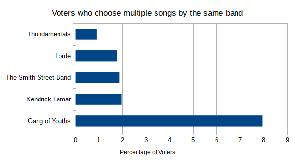

Love me two times, baby
Each of us has bands which we absolutely adore. Does this translate however into our voting patterns? Yesterday showed that Triple J listeners as a whole have diverse tastes, but how is that reflected on an individual level? In short, do people choose one song from each of their favourite bands, or do they vote up and down the ticket for the same act? Another way to look at this question, from the point of view of a band’s promoter, is which band has the most enthusiastic fans?
Let’s look at the voting patterns first. As I am a strict ‘one song per band’ voter, it was to my surprise that 35% of people voted for the same artist more than once in their ballot. But only 9 people out of the 2339 voted for a three or more songs by the same band. This means that people will vote for two songs by their favourite band, but they definitely draw the line at three. Excluding the joker who posted a fake ballot with 10 votes for Smooth Sailing by A. Swayze & The Ghosts, the band with the most devoted fan is British India. They had a fan who voted for all five of their songs and no others.
In the other direction, a graph tells the story nicely. Gang of Youths lead this category by far. Their well deserved album of the year status is here reflected by how many people couldn’t choose between their favourite track and in the end had to choose both. Note also that the Smith Street Band make an appearance here, but not highly. This will have consequences for tomorrow.
